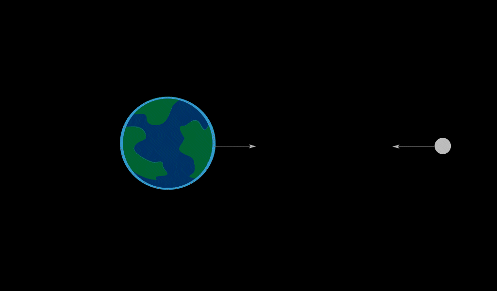
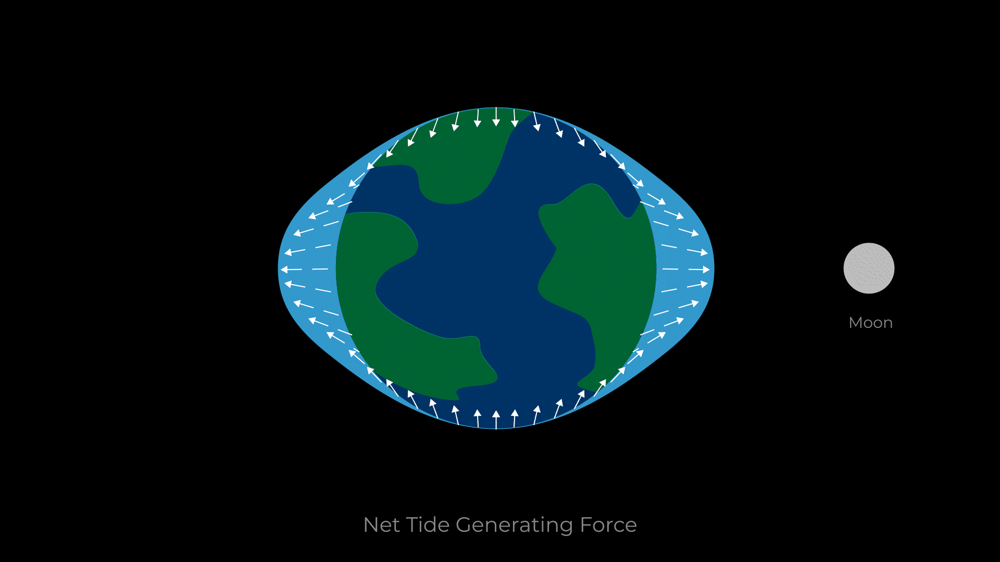
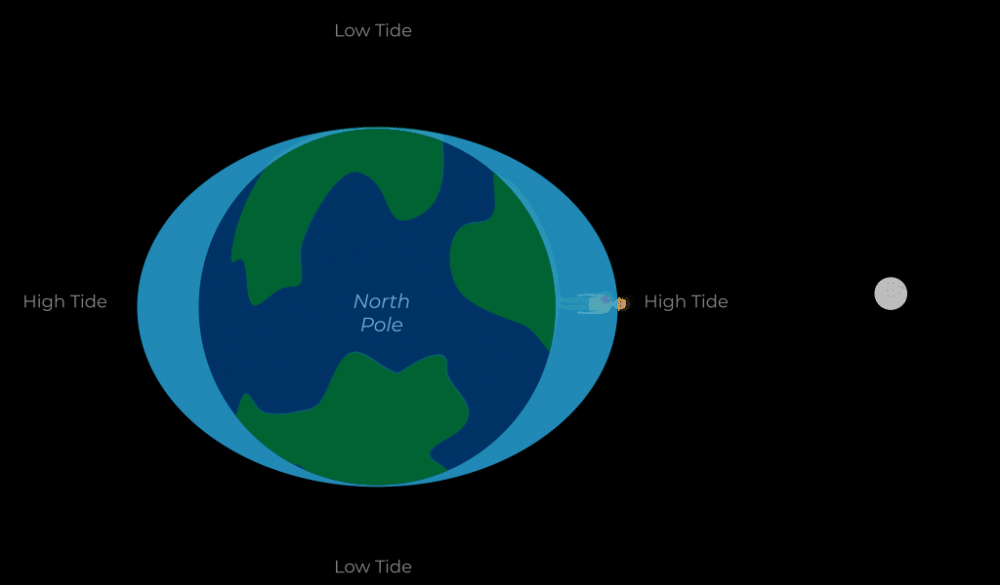

Você caminha ao longo de uma praia, no seu passeio você observa conchas, troncos e algas deixadas pelas marés recuando aos seus pés. Agora olhe para a Lua e você verá a principal causa do aumento e recuo dos oceanos em nossas costas. Por mais distante que a Lua possa parecer, sua atração gravitacional na Terra desempenha um papel enorme na formação das marés.
Quando você vê a maré subir ou descer, o que você realmente está vendo é um ciclo de pequenas mudanças na distribuição dos oceanos do nosso planeta. À medida que a gravidade da Lua puxa a Terra, ela muda a massa da Terra, distorcendo sua forma levemente na forma de uma bola de futebol americano, alongada no equador e encurtada nos pólos. Esse efeito na Terra sólida pode ser detectado por instrumentos científicos, mas podemos observar as mesmas mudanças nos oceanos da Terra apenas visitando a praia.
 fonte: https://moon.nasa.gov/resources/444/tides/Pode parecer estranho que o oceano "inchar" no lado mais distante da Lua, igual acontece no lado mais próximo a ela. Isso acontece porque a gravidade da Lua afeta toda a Terra, puxando em todos os pontos do nosso planeta. A atração mais forte ocorre nos pontos mais próximos da Lua e a mais fraca nos pontos mais distantes, mas cada pedaço de água é afetado.
Agora pense em derramar um balde de água em uma mesa. É mais fácil que a água derrame na mesa em vez de subir para cima. Quando a gravidade da Lua atrai a Terra, a água não flutua para fora, apenas é empurrada e espremida ao redor do globo, dirigida tanto pela atração gravitacional quanto por outras forças, até que finalmente acabe se projetando no lado mais próximo da Lua e o lado mais distante.
 fonte: https://moon.nasa.gov/resources/444/tides/À medida que a Terra gira dentro dessa camada de água, suas massas de terra passam pelas duas protuberâncias. Essas protuberâncias são as marés altas da Terra. A maioria das costas experimenta duas marés altas e baixas por dia. Um ciclo de maré alta à maré alta (ou ciclo de maré baixa à maré baixa) leva pouco mais de 12 horas.
 fonte: https://moon.nasa.gov/resources/444/tides/Nosso observador vê as marés subirem ao passar pelas protuberâncias e descerem ao passarem pelos pontos baixos. Claro, na realidade a Terra não é uma bola lisa, então as marés também são afetadas pela presença de continentes, a forma da Terra, a profundidade do oceano em diferentes locais e muito mais. O tempo e as alturas da maré perto de você serão afetadas por esses elementos adicionais.